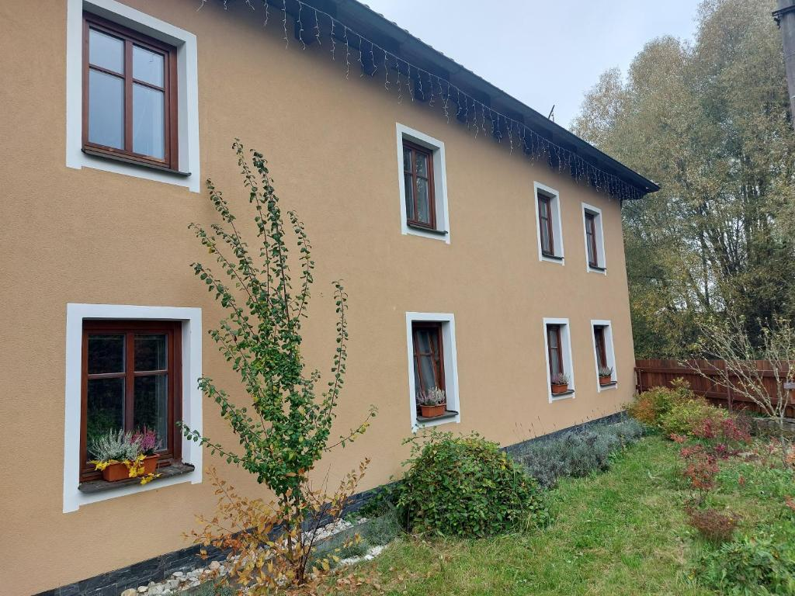
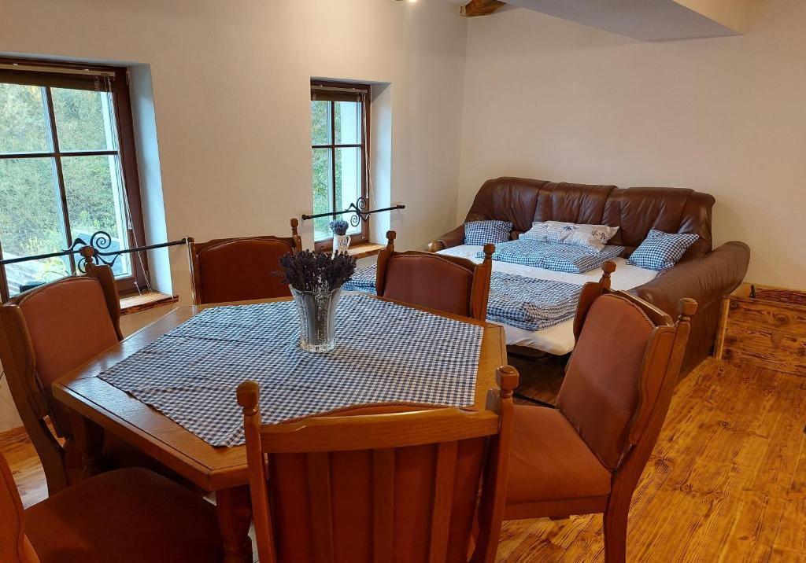
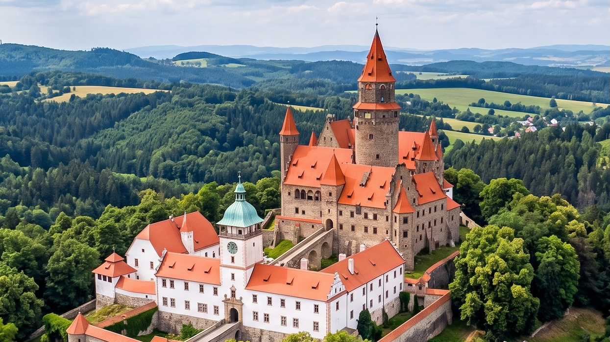

Vojtěchov u Hvozdu · Haná
Autentické ubytování v citlivě zrekonstruovaném statku, kde se čas zastavil mezi vůní dřeva a šuměním potoka Špraněk.
Rezervovat pobyt
Velkorysý apartmán o rozloze cca 50 m² nabízí zázemí pro rodinu i přátele. Dvě ložnice s manželskou postelí, obývací pokoj s krbem a koženou pohovkou s integrovanou postelí. Ložní prádlo i úklid jsou v ceně.
V další části statku právě dokončujeme druhý apartmán ve stejném duchu. Brzy tak budeme moci přivítat i větší společnosti a dvě rodiny současně.
Podívejte se dovnitř — obývací pokoj s krbem, ložnice, kuchyň i koupelna.
Vytvořili jsme zázemí, kde se snoubí historie venkova s moderním komfortem.
Dvě ložnice, obývací pokoj a koupelna, cca 50 m².
Vnitřní krb pro dlouhé podzimní a zimní večery.
Indukce, trouba, myčka, lednice s mrazákem i kávovar.
Vlastní stání přímo v uzavřeném dvoře.
Sluneční terasa, posezení a výhled do krajiny.
Možnost grilování a opékání přímo ve dvoře.
Hrací koutek pro děti, dětská postýlka na vyžádání.
Bezdrátové připojení v celém objektu.
Nekuřácký objekt · bez domácích mazlíčků · majitel v objektu
| Sezóna | Termín | Týden | Víkend |
|---|---|---|---|
| Letní sezóna | 15. 6. – 15. 9. | 20 000 Kč | 6 000 Kč |
| Zimní sezóna | 1. 12. – 15. 3. | 20 000 Kč | 6 000 Kč |
| Mimo sezónu | zbytek roku | 18 000 Kč | 5 800 Kč |
Ceny za celý apartmán · minimální délka pobytu 2 noci
Vojtěchov leží na pomezí Drahanské vrchoviny a Hané. Okolí nabízí krasové jeskyně, pohádkové hrady, houbařské lesy i nekonečné trasy pro pěší a cyklisty — les začíná 180 metrů od dvora.
